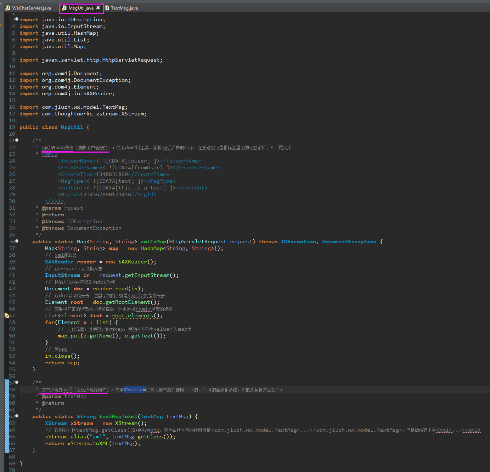
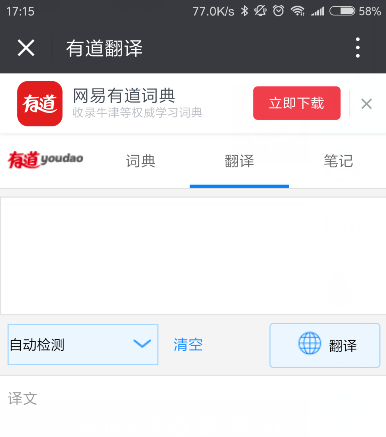
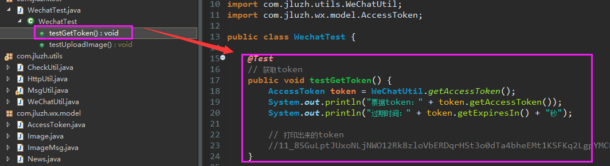
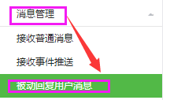
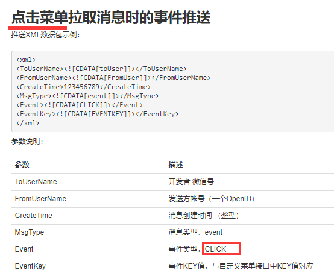
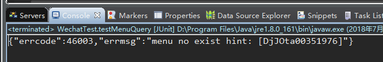

微信公众号开发
参考：慕课网 - 初识Java微信公众号开发
参考：慕课网 - Java微信公众号开发进阶
制作日期：2018-7-13 - 2018-7-18
制作人：小桅[yw_forgit@163.com]
1、开启开发者模式
新建web项目
改一下发布到根目录，改不改都没事，如果改这个之前发布过，就要重新Clean一下
大概流程
看看微信神经的公众平台技术文档（注意：微信公众平台是公众号开发，微信开放平台是APP等非微信的第三方应用开发），点击进入 接入指南
如下图，简单来说就是我们写一个接口(使用get方式)，该接口在图2点击提交的时候，微信会调用(get方式)。接口要求获取图1里面的四个参数，额外还有一个我们自定义的token，这个几个东西按照如图1的三个步骤走，然后得到结果与signature比较，结果一致则表示这个请求是微信发起的，然后我们的接口原样返回echostr即可，微信就会校验（图2的token要与接口自定义的token一致）成功就会让我们成为开发者。
图1：
图二：
代码
启动web，然后本地看下，下图，说明接口通了，只是没有参数，报错而已
由于微信屏蔽了ngrok，故我用了公司的外网服务器，配合Nginx转发，就可以通过外网访问我本地的服务器了。
Nginx：
通过域名访问，如下图，也是通的
然后回到微信公众平台（要登录，并且管理员扫描确认的），填写外网的url，就是上面说的.do接口、自定义的token（与我们定义的接口的token要一致）等。需要注意的是，必须要写好这个接口，再提交才能成为开发者，否则点击提交会有各种提示。
点击 提交。然后成功了。
启用之后，自动回复、自定义菜单就会失效
确定之后
尽管微信公众号的菜单还在，但是已经失效了，但是还有有其他方法配置的，再议。
2、接收普通消息（文本消息）
原理
比如图1，当用户公众号输入界面发送“北京天气”，这条信息就会经过微信官方后台，然后再转发给我们的服务，转发给我们的就是xm的格式图3，Content就是“北京天气”这个内容，然后我们对用户的消息进行处理，然后就要返回数据给用户，同样要以xml的格式（只是ToUserName与FromUserName刚好相反了）返回去给微信官方后台，之后才会转发到用户端。
图1：
开发文档：当普通微信用户向公众账号发消息时，微信服务器将POST消息的XML数据包到开发者填写的URL上，就是请求到本示例的WeChatServlet的doPost方法上。
图2：
格式化一下xml，< ![CDATA[…]]>这些东西不管，xml的转义而已，只要知道里面是ToUserName的值即可
图3：
代码
接着上一个环境，现在只用post请求

测试
用户在公众号聊天界面输入：嗨，公众号小朋友
消息经过微信官方后台，再以xml的形式经过我们的后台，我们读取到数据处理之后，又以xml形式返回给微信官方后台，微信官方后台再转发给用户，解析出我们给用返回的信息。
下面是我们后台打印返回给微信官方后台的xml：
用户发送的消息和我们后台返回的消息
3、接收事件推送
接着上面的环境
开发文档看下
这里只讲关注事件，还有关键词自动回复
（以前公司虽然也做过微信开发，但是经过这次从头到尾的开发，才对这些流程更加清晰）
关注/取消关注事件
代码
测试
4、百度应用引擎BAE
把自己的应用部署到百度上去，可以直接外网访问了，但是收费的，但比你一直开着电脑耗的电费便宜（深圳地区）
5、申请测试账号
个人订阅号的接口权限有限，比如素材管理接口都没有权限，如下图
解决办法就是使用测试账号，选择 开发者工具 -- 公众平台测试账号
用手机微信扫描登录
手机端确认
就可以看到测试号的管理页面，需要注意的是，这是一个新的账号，故要重新验证接口配置，与前面的 接入指南 差不多，只需要URL、Token即可，密钥不用。
测试号有很多高级接口，是可以使用的，下图随便截图了一下
URL那个接口要通哦，跑起前面的项目，提交接口配置信息，如图。
对比一下之前的，是一样的，只是现在用了测试号，下图是本节之前说的订阅号。
扫码关注一下（测试号管理界面）
手机端点击关注
关注成功之后
看下用户（测试号管理界面）
6、消息回复接口
背景环境认识
多图文在公众号界面的显示
单图文在公众号界面的显示
开发文档
公众号开发文档，我们选择图文消息
如下图，xml的格式就是我们要组装的图文消息格式
格式化一下xml
代码
左边NewsMsg对应着右边的xml的紫色框部分
左边News对应着右边的xml的紫色框部分
测试
跑起项目，公众号界面回复2，日志
等待一会，图片加载可能会比较慢
点击 图文1标题

点击 图文2标题

7、素材管理接口
1）获取access_token
文档
获取素材等一些在微信服务器上的资源（也可以是我们上传到微信服务器的），需要先获取access_token，通过这个token来获取资源，注意，token每天只能获取2000次。
由于素材获取是高级接口，而订阅号没有权限，故使用测试号来开发
代码
使用测试账号的APPID和APPSECRET

测试
执行测试，可以看到获取到了token，还有过期时间
2）被动回复用户消息（图片消息）
接着上面的环境
文档
新增临时素材
获取到media_id之后，就可以在消息里面使用，对应着MediaId，微信坑爹文档是不说这个事的。
回复图片消息的xml格式
代码
测试
由于我的token过期了，故要重新获取，执行testGetToken()

获取到token，复制出来
复制到testUploadImage()方法的accessToken，然后执行testUploadImage()，就会上传指定路径的文件
获取到mediaId，根据此id可以对应着刚上传的文件，这是微信服务器处理的，回复图片消息时，只要带该mediaId即可获取到刚刚上传的图片文件。
然后跑起项目，图片消息配置在关键字回复这里
回复3，等待，比较慢，然后图片才会出来
日志
3）被动回复用户消息（音乐消息）
接着上面的环境
文档

回复消息的xml格式
代码

测试
执行testUploadThumb()，我的token没有过期，不用重新获取
获取到ThumbMediaId，用于封装回复的音乐消息
跑起服务，回复4，缩略图显示不对，不管了
日志
点击 音乐，进入如下界面，需要点击 播放，等待一下，就会播放
8、自定义菜单接口
复制上一个项目
1）自定义菜单创建
文档
多角度看看我们的请求参数：
微信要求请求体原生的格式
转成json对象的格式
收缩起来可以看到三个主菜单
“其他菜单”这个主菜单里面有两个子菜单
微信公众号界面的显示（提前看看）
代码
执行testMenuCreate()，执行成功会日志显示“创建菜单成功”
不管怎么写model、组装菜单，但是最后的格式要微信要求，而多出来一些属性不会影响，红色就是多出来的，如图

折叠看一下


菜单按钮等
测试
前面，执行testMenuCreate()，如果成功，就可以在公众号上看到如下情况（可能需要取消关注，然后重新关注才会立马生效）：
看到三个主菜单，点击“菜单”，可以看到两个子菜单，如图
点击“click菜单”，因为我服务器没有跑起来，而且也没有做处理操作
点击 view菜单
点击“扫描事件”，会调用微信的扫描工具
点击“地理位置”，会调用微信的地图，选择位置，可以点击“发送”
点击发送就会在公众号界面，显示你选择的位置

2）自定义菜单事件
但是我们还可以在这些菜单点击、事件添加自己的逻辑。
文档


代码
添加4个事件
这个类添加的代码，放大截图
测试
点击“click菜单”，我们的后台处理逻辑，用户可以接收到推送
日志
点击“view菜单”，直接跳转url，用户无法接收到推送，但是我们的后台还是能处理逻辑的
日志
点击“扫码事件”，会调用微信的扫描工具，必须要扫描到码，用户端有动静或者声音提示，才会进入到我们的后台处理逻辑（以前公司扫码区分不同地区的二维码就是在这里处理的，而且二维码还会携带参数，在这个事件可以获取到对应的参数，即可标志区分不同的地区扫码关注了，虽然最后关注都是同一个公众号，区分不同二维码、地区是后面的参数区分的），用户无法接收到推送，因为微信要跳转二维码的链接。
点击“地理位置”菜单，会调用微信的地图，而且必须点击地图右上角的“发送”才会进入我们后台处理逻辑，用户也无法接收推送，但是会发送地理位置给公众号。
需要点击“发送”
发送地理位置
日志
3）查询菜单
文档
代码
测试
执行testMenuQuery()

复制出来，格式化一下，对比一下之前的，差不多的
但是不建议通过实体类这么添加，最好是拿到这个模板放到在线json格式化里进行修改，然后直接把修改好的作为请求体，发送post请求即可。
4）删除菜单
文档
代码
就两个地方
测试
执行testMenuDelete()
再查下一下菜单，提示菜单不存在了，微信公众号界面多进入出来几次就会看不到菜单的存在

5）修改菜单
说一下推荐的做法吧：
通过查询菜单，获取到菜单的数据，放到在线json格式化工具，进行编辑菜单，然后复制回来，先删除当前菜单，然后再以修改好的菜单，直接作为请求体，使用post发送即可。可能需要取消关注，再重新关注菜单才会立马生效。
9、百度翻译API
费用要求
1）开发接入百度api
开发文档
登录 管理后台
登录百度翻译开放平台，获取APP ID和密钥即可
测试、代码
先输出翻译的全部结果，然后debug看下JSONObject转换之后的格式，为了获取单纯的译文
就一个类，执行mian即可，输出结果我也放到注释去了
2）接入微信自动回复
代码
就紫色部分
测试
跑起项目，测试
日志
总结一下存在的问题:
https要使用https的请求方式，我这里还是用了http；
access_token一般都存入数据库的，先从数据库获取，过期了再从微信获取；
xml要支持"<"这些符号的解析
（写这个教程感觉很心累呀）